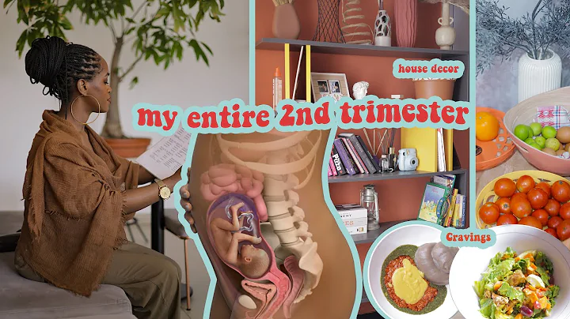
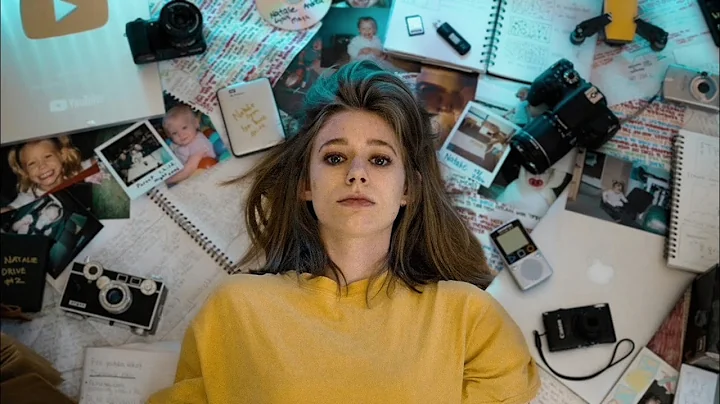
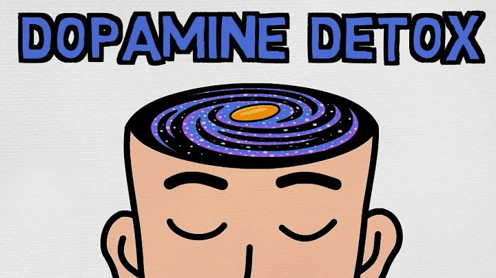
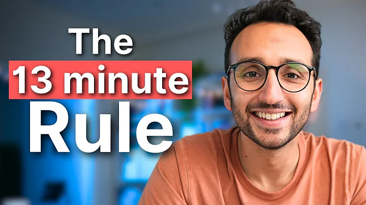

21:20
MY 2ND TRIMESTER // MAKING ALL MY CRAVINGS // ANTENATAL VISITS
42Kviews · 4 days ago
18:14
Youre Not Forgetful: My system for Memorising Everything
1.5M views · 2 months ago
15:10

How to Discover Your Authentic Self == at Any Age | Bevy Smith | TED
1.7M views · 1 year ago

17:01
I Became Everything I Ever Wanted.
3M views · 2 years ago

14:14

How I Tricked My Brain To Like Doing Hard Things (dopamin detox)
25M views · 3 years ago

12:41
How to FInd a Career You Genuinely Love
1M views · 9 months ago/p>